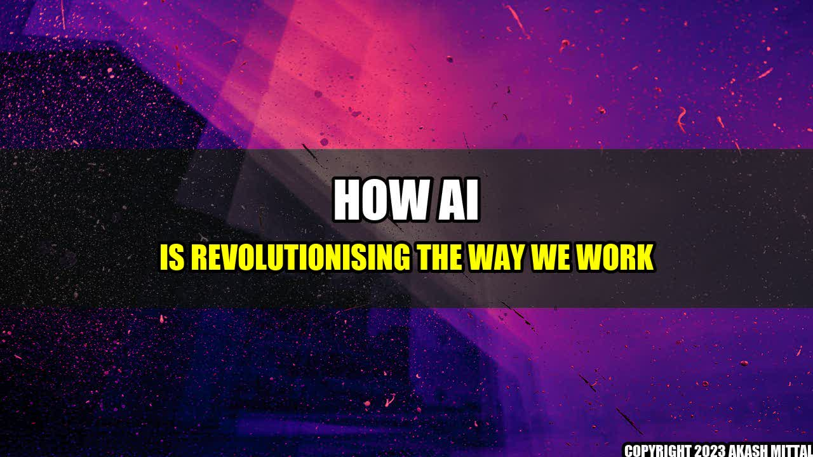

How AI is Revolutionising the Way We Work

It's been a year since John started his new job as a data analyst at a tech company. There he was, sitting in front of his computer, staring at rows and columns of data, spending hours doing manual data entry and analysis, often repeating the same tasks over and over again.
But things changed when the company introduced AI to its operations. Suddenly, John found himself with more time to work on important strategic tasks, as the algorithms took care of the tedious and time-consuming data analysis. He saw his productivity and efficiency skyrocket, and felt more fulfilled in his job than ever before.
This is just one example of the transformative impact that AI is having on the way we work. In fact, a recent report by MIT predicts that over the next decade, AI will dramatically change the landscape of work, creating a "leap" for workers akin to the Industrial Revolution.
According to the report, AI will increase productivity and efficiency in all sectors of the economy, from manufacturing to finance to healthcare. Some of the quantifiable examples include:
- AI is expected to generate up to $2.9 trillion in business value by 2021, according to Gartner.
- AI-powered chatbots are reducing customer service costs by 30%, according to IBM.
- AI is improving safety and efficiency in manufacturing operations, with up to 20% reductions in unplanned downtime and 25% increase in production quality, according to McKinsey.
- AI is revolutionising healthcare, with predictive analytics and precision medicine expected to save the industry $100 billion annually by 2024, according to Frost & Sullivan.
The Future of Work: How AI is Changing the Game
As AI continues to advance at an exponential rate, it's clear that it's not just a passing trend, but a revolutionary force that is transforming the way we work. Here are three ways in which AI is changing the game:
- Automation & Efficiency: AI is making it possible to automate routine tasks, reducing the need for human intervention and increasing the speed and accuracy of work. This means that workers can focus on higher-level tasks that require creativity and critical thinking, leading to a more engaged and satisfied workforce.
- Personalisation & Innovation: AI is enabling us to personalise products and services to a degree never before possible, by leveraging vast amounts of data and predictive analytics. This means that businesses can create unique and tailored experiences for each customer, driving innovation and improving customer loyalty.
- Ethics & Responsibility: As AI becomes more integrated into our lives, it's important to consider the ethical implications of its use, such as privacy, bias and transparency. This means that businesses, governments and individuals need to take responsibility for making sure that AI is used in a way that benefits society as a whole.
But it's not just businesses that are benefiting from AI. Individuals are also finding new opportunities for growth and learning as a result of AI-powered tools and technologies. For example, online learning platforms like Udacity and Coursera are using AI to provide personalised recommendations and feedback to students, helping them to learn more efficiently and effectively.
Another example is the rise of the gig economy, where workers can access flexible work opportunities through online platforms like Uber and Airbnb. These platforms use AI to match workers with clients, optimise pricing, and monitor quality, creating a seamless and efficient work experience.
If you're looking to take advantage of the opportunities that AI is bringing to the workforce, here are some practical tips:
- Embrace new technologies and be willing to learn and adapt as the landscape changes.
- Focus on developing skills that can't be easily automated, such as creativity, critical thinking, and collaboration.
- Take responsibility for the ethical implications of AI, and be an active participant in shaping the future of work.
References:
- MIT (2019). The Future of Work: How AI Is Transforming Industries and Creating Jobs. Available at: https://ilp.mit.edu/newsstory.jsp?id=31855
- Gartner (2018). Predicts 2018: AI and the Future of Work. Available at: https://www.gartner.com/en/documents/3846906/predicts-2018-ai-and-the-future-of-work
- IBM (2018). The Watson Assistant Promise: Delivering on the Power of AI-Powered Chatbots. Available at: https://www.ibm.com/blogs/watson/2018/11/the-watson-assistant-promise-delivering-on-the-power-of-ai-powered-chatbots/
- McKinsey (2018). Smartening up with Artificial Intelligence (AI)—What's in it for Germany and its Industrial Sector?. Available at: https://www.mckinsey.com/industries/advanced-electronics/our-insights/smartening-up-with-artificial-intelligence
- Frost & Sullivan (2018). Predictions for the US Healthcare Market, 2018. Available at: https://ww2.frost.com/frost-perspectives/predictions-us-healthcare-market-2018/
Hashtags: #AI #FutureOfWork #Automation #Efficiency #Personalisation #Innovation #Ethics #Responsibility
Category: Technology
Akash Mittal Tech Article
Share on Twitter Share on LinkedIn